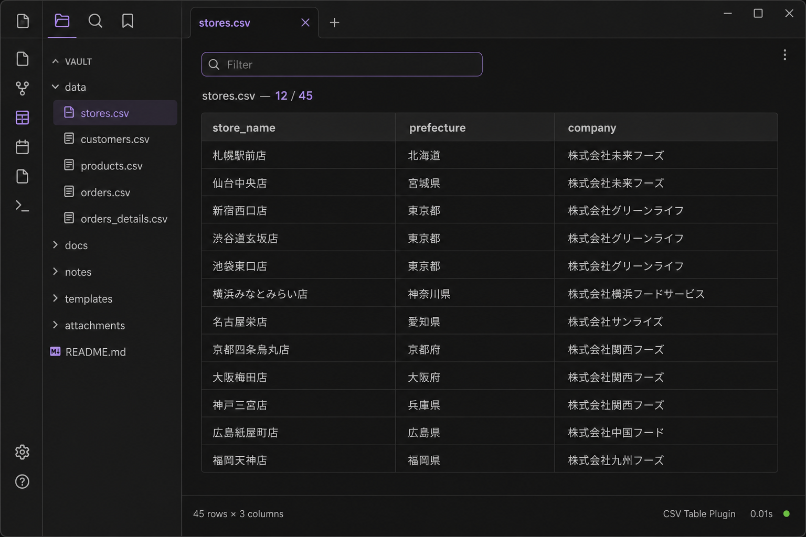

表形式ビュー
Clean table view
.csv を読みやすい表として表示。行の区切りが一目で分かります。
Render .csv files as readable tables with clear row separation.
TableCSV は Obsidian 用プラグイン。ファイルエクスプローラーから CSV を開くだけで、固定ヘッダー付きの表ビューとテキストフィルターが使えます。ネットワーク不要・無料（MIT）。
TableCSV is an Obsidian plugin. Open any CSV from the file explorer—sticky header, text filter, no network requests. Free & MIT.

実際の Obsidian 上での表示イメージ Actual view inside Obsidian
Vault 内の CSV を、スプレッドシートアプリを開かずにサッと確認。
Review CSV data in your vault without launching a spreadsheet app.
.csv を読みやすい表として表示。行の区切りが一目で分かります。
Render .csv files as readable tables with clear row separation.
スクロールしても列名が見えるので、長い CSV でも迷いません。
Column headers stay visible while scrolling through long files.
上部の入力欄でセル内テキストを絞り込み。素早く行を探せます。
Narrow rows by typing in the filter box—find matches instantly.
ネットワーク通信なし。Vault 内のデータは PC 上で完結します。
No network requests. Your data stays on your device.
Obsidian → 設定 → Community plugins →「Turn on community plugins」
Obsidian → Settings → Community plugins → Turn on community plugins
Browse →「TableCSV」で検索 → Install → Enable
Browse → search TableCSV → Install → Enable
ファイルエクスプローラーから .csv をクリック。表ビューが開きます。
Click any .csv in the file explorer to open the table view.